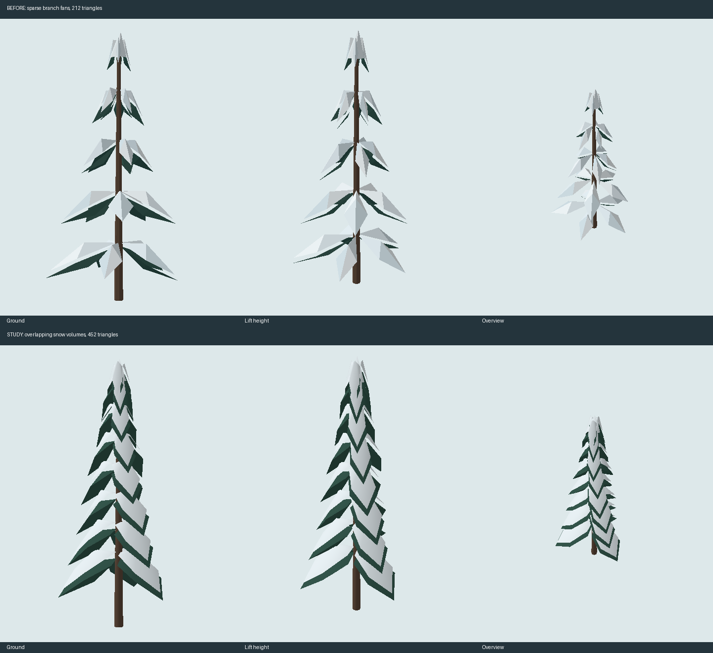

New fir / 452 trianglesDrag to orbit. Scroll to zoom.
Only variant 1 changes. Eight overlapping branch tiers, rounded snow volumes and visible dark undersides. One mesh, one material. The other five variants stay unchanged.
This is a model study. In-game appearance and laptop frame rate still need browser review.
Show the geometry comparison
Offline software rendering of the same mesh data, with fixed lighting. This is not an in-game screenshot.
